Gum-mouth v2: front hang
One take, based on the owner pick (v1 take B). The beak bites the gum directly, no stalk. The body hangs straight under the grip point and leans around it when it swings. Numbers: numbers.txt. Notes and doubts: README.md.
Next to the in-game Sootling (two left cells are in-game frames)
Rest, puff, blast, full lean right, full lean left.

Every typed frame
16 complete hand-typed 24 x 32 grids. 1x sheet: B_all_frames_1x.png.
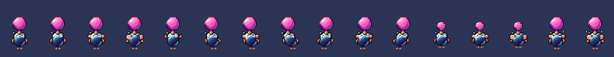
Idle hang with the constant blow loop
Cheeks sink, fill, hold; the bubble pulses with the breath.
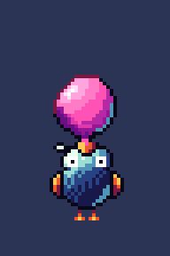
Flying: blow loop over the swing
Body leans around the grip point while the breath continues.

Swing settling, pushed right
Damped pendulum: full lean, smaller, smaller, still.
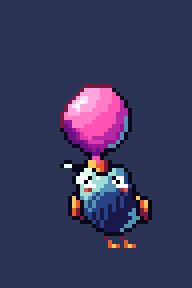
Swing settling, pushed left
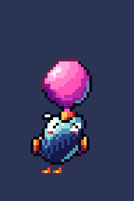
Flap puff
Wings up, hard blow, bubble swells, bird lifts.

Blow-up on landing
Stands, blows the gum up in five breaths, then lifts off.
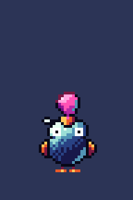
Distress stage 1
Palette swap only: redder cheeks, faster breath.
Distress stage 2
Strain frame: squint and sweat.
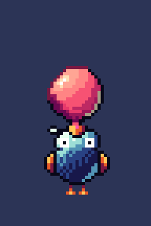
Distress stage 3
Eyes shut, two sweat drops, tremble.
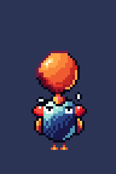
Distress stages side by side
Stage 0 to 3, rest and puff, then strain and burst.
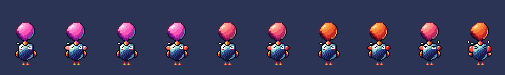
Mirrored facing
The front view is near symmetric (only the head tuft flips). Mirroring costs no tiles.
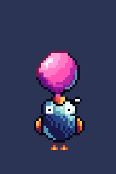
CPU palette
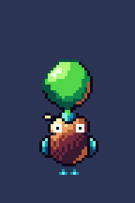
Player 2 palette
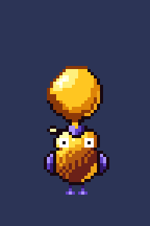